Matchup of the Week I’m Sorry, Mc-Jackson (2-6) vs. Spitters not Quitters (6-2) Unorthodox pick here, but it’s the most intriguing to me. Can last-place Seif upset Kris? The projections have it close, as the highest scoring game of the week, and Seif got a nice start from Lamar on TNF via four passing TDs.
What to watch: * The top scorers, JT @ Pittsburgh and CMC @ NYG. Nuff sed. * Marvin Harrison Jr. is WR37… but he gets the Cowboys on MNF. The game could depend on him as the only player going on Monday. * Kimani Vidal gets the extremely soft Titans. Seems like a run-the-ball-type game, giving confidence to Kris’s flex.
Waiver Wire Spice 🌶️ * KJT goes big with $14 on the Lions, up against JJ McCarthy and his very healed ankle. Could be a big one. * There’s one Giant blind spot for nine of us: Andy gets Tracy with his last four bucks, with no one else bidding on him. In Week Two, Andy snagged Skatt with no other bids as well. Worried this one’s gonna come back and get us. * Most importantly, we’ve now got some seriously broke dudes. * $0: Andy and Neil * $1: Seif
Ups and Downs
I added graphs for points for, hope you like them.
1. Kris (6-2) ↔️
PF: 1136.08, FAAB: $25, W1
Jonathan Taylor has three games with three TDs already. The crazy part is that you can’t see which games clearly on the graph, since it’s been an all-around effort for Kris’s team.
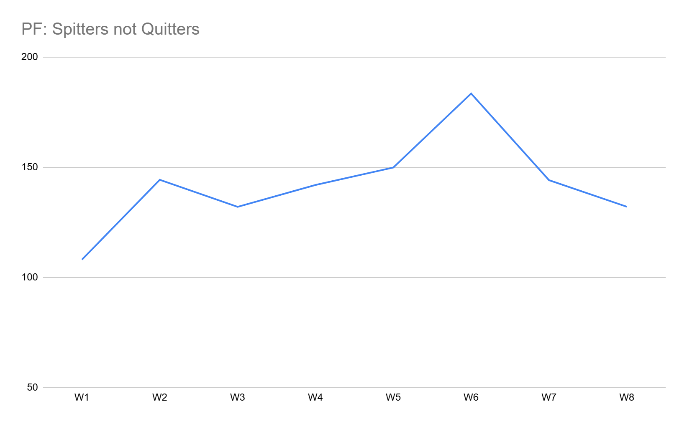
2. Neil (5-3) ↔️
PF: 977.42, FAAB: $0, W5
Neil’s on a historic heater after starting 0-3. Props to his wheeling and dealing to go all in. He told me he couldn’t have done it without Drake Maye, his favorite player.
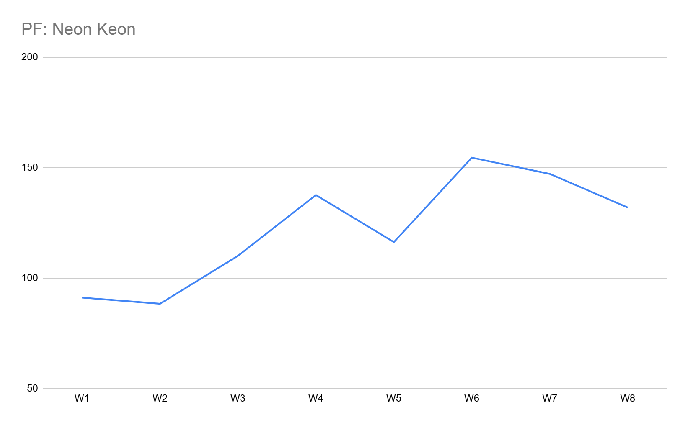
3. PJ (4-4) ⬆️
PF: 1008.700, FAAB: $23, W2
Like Michael Meyers, he’s back from the dead, right in the mix. Could have the top two wide outs, and could be stronger if Dowdle eats up more of the Panthers’ carries, which is probably going to happen right about now.
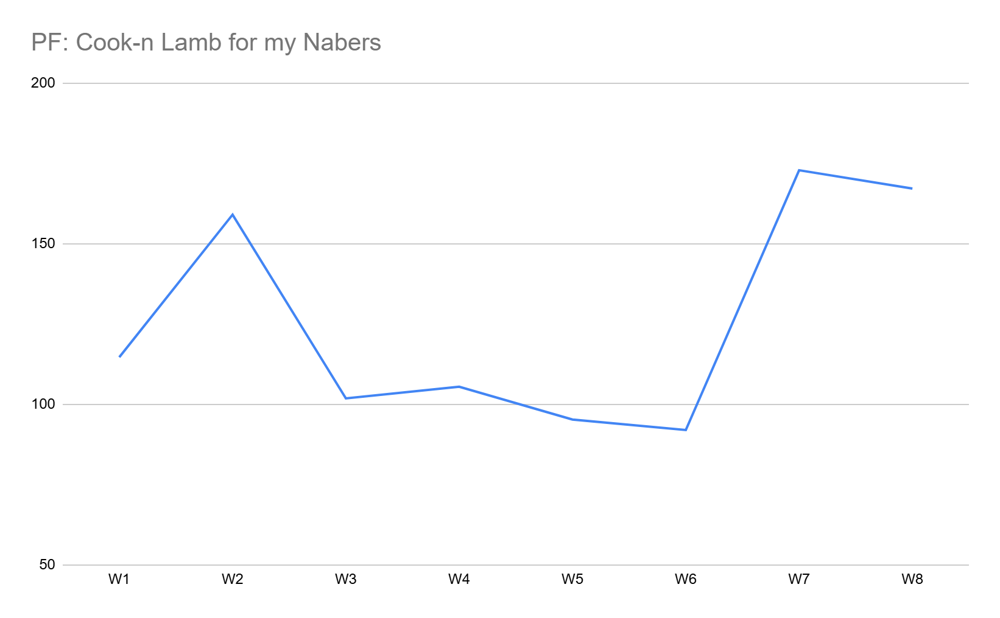
4. Joel (5-3) ⬆️
PF: 944.86, FAAB: $16, W1
Orande Gadsden could be him. This man’s flying up the charts in targets from our guy Herbie, and looks to be the next great fantasy TE.
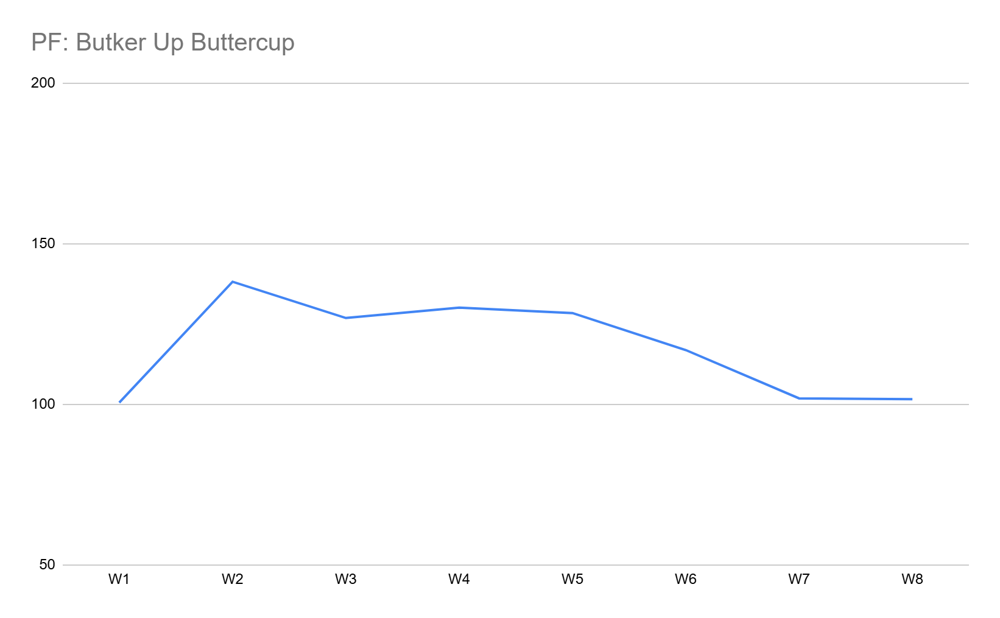
5. Andy (5-3) ⬇️⬇️
PF: 958.98, FAAB: $0, L1
Seeds his second place spot to Neil, despite the yuge game from Tucker Kraft. This week ,with Nacua returning to his lineup, Andy looks to get back on track against CJ.
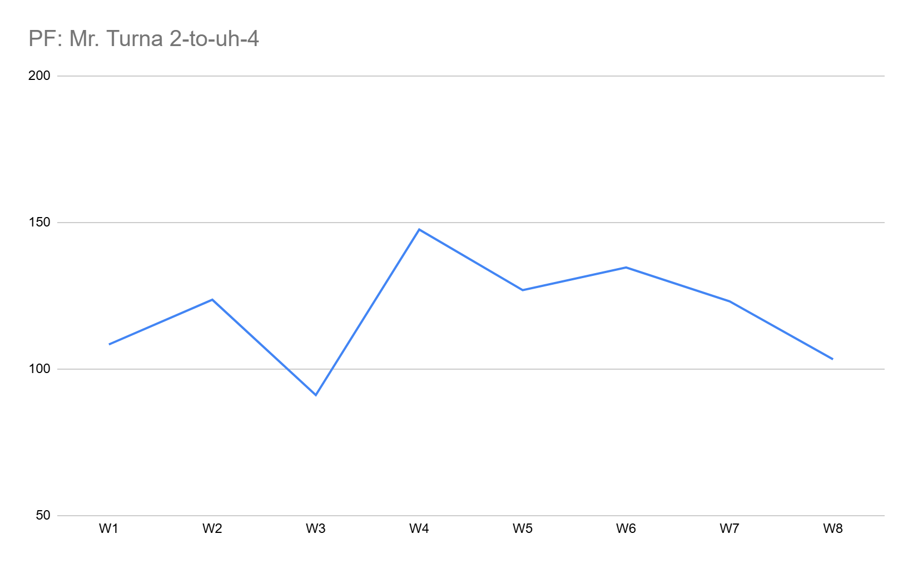
6. Tony (3-5): ⬆️⬆️⬆️
PF: 972.04, FAAB: $75, W2
Is Tony this league’s Baltimore Ravens? After winning two straight, this could be a playoff dark horse. He’s fourth in PF, so if he can string together some more wins, he’ll be looking pretty good. He can start the journey this week by taking Neil’s seat on the rocket ship (peep Tony’s chart).
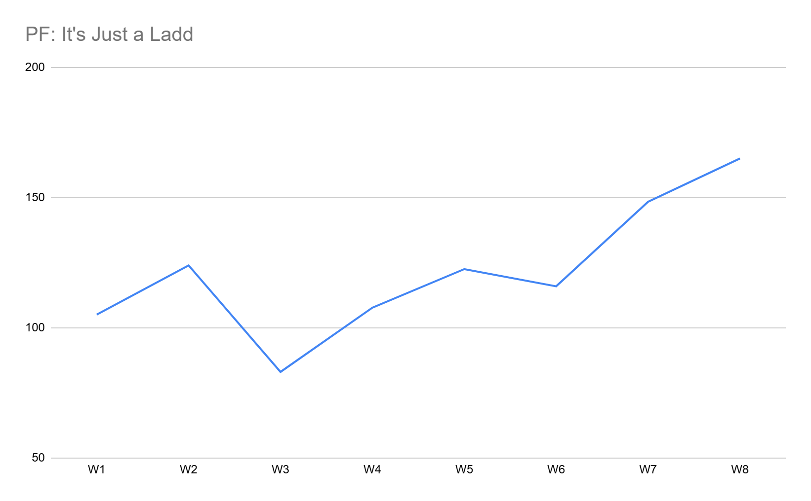
7. Jake (4-4) ↔️
PF: 970.08, FAAB: $44, L3
My team’s trash. I feel locked into them and won’t make significant moves, but the ship keeps sinking. Would significantly help to win this week and trade places in the standings with Joel. If I do it, I’ll be doing it with Dart at the helm 🤷
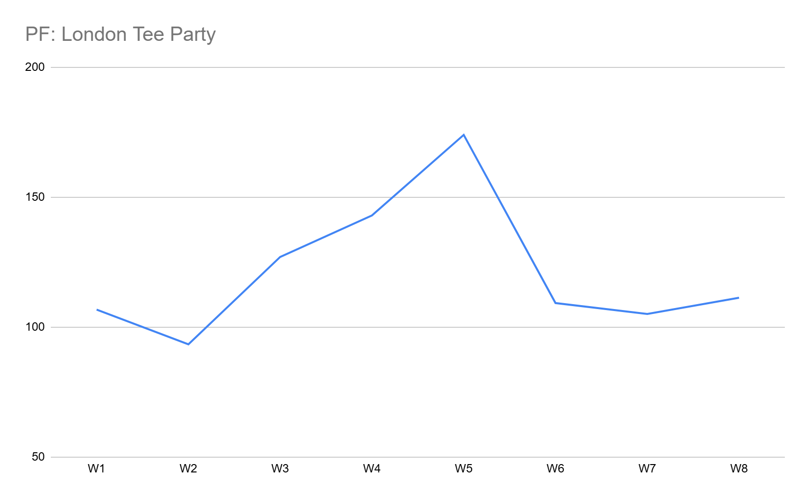
8. CJ (3-5) ↔️
PF: 883.52, FAAB: $66, L1
This team brings me joy, but that might not be enough to get W’s. Bo Nix and Jahymr Gibbs, did I draft this team? Oh wait, no there’s also three Chiefs. I don’t know what else to say haha.
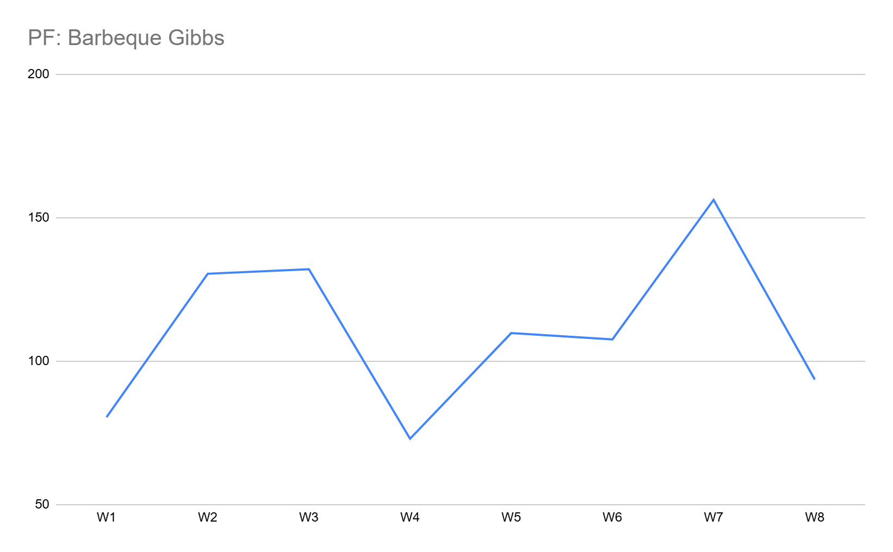
9. Matt (2-6) ⬇️
PF: 928.00, FAAB: $1, L3
Zilla keeps falling, but gets some guys back this week which could be a big boon - Lamar (had a good game), Nico in his second week back with full practices (and dodging PS2 luckily), and Brock Bowers comes back after a nice extra week off. This team could get going.
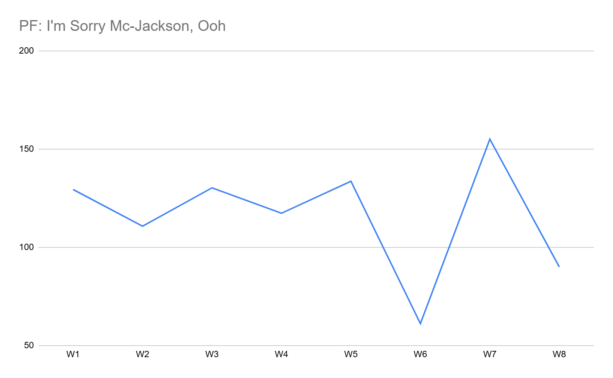
10. Pangy (3-5) ↔️
PF: 887.44, FAAB: $10, L4
Lost four straight, and pretty badly. This week doesn’t look much better. I ain’t gonna say more.
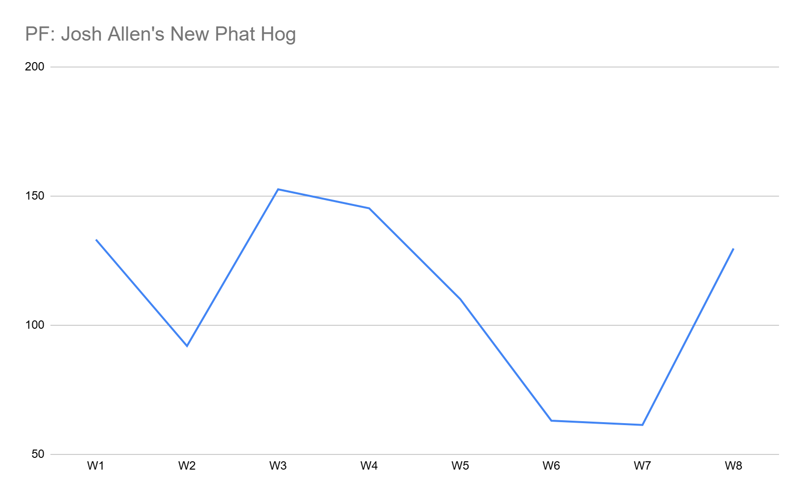
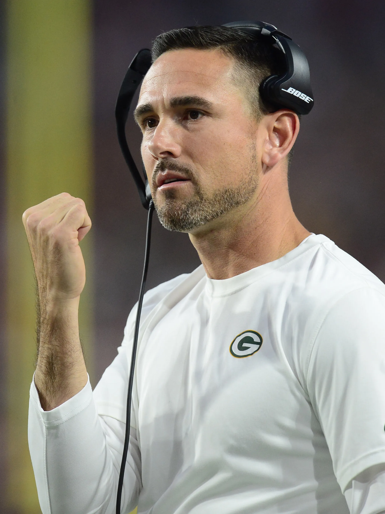
Halloween doesn’t exist for real football fans…
“It’s Halloween, huh? I had a big discussion about this with my assistant, Daryl. I was like, ‘I don’t give a shit if it’s Halloween, alright?’ We’re trying to win a game. Period. It’s a Friday in the National Football League. That’s what day it is.”
- Matt LaFleur
Good luck to everyone besides Joel! - Jake 🐍